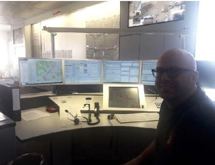
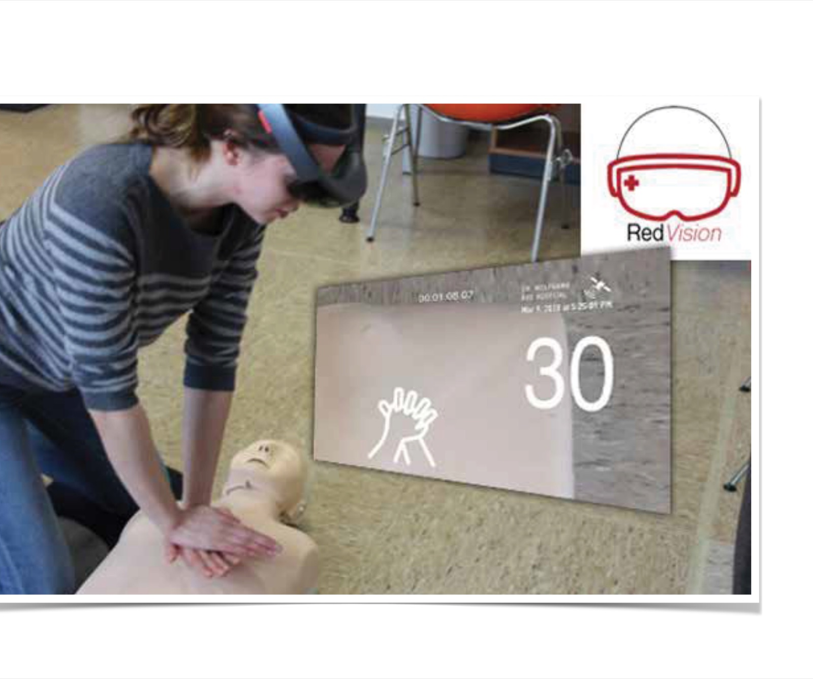
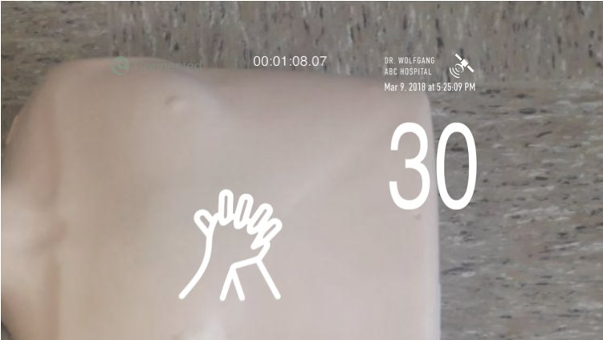

Work / AI × AR / Health-tech / Co-founder
Novaid
Novaid puts first aid instructions in a bystander’s field of view, hands-free, while an AI reads the patient and a dispatcher watches through the same camera. It started as a HoloLens research project. It is now a company I co-founded, incubated at Qatar Science & Technology Park, with a shipped iOS app and a working end-to-end dispatch loop.

The gap before the ambulance
Bystanders are first on the scene in almost every emergency and almost none of them act. The instructions exist. People can’t recall them under panic, can’t tell if they’re doing it right, and can’t hold a phone while both hands are on a chest.
So the brief was narrow on purpose: support the untrained bystander for the minutes before EMS arrives. Not a medical device. Not a replacement for dispatch. Hands-free, or it doesn’t count.
Where it started
The first version was a master’s-level research project. I facilitated a design thinking process with surveys, interviews, personas and field observation, including time in an emergency dispatch control room to understand what the responder on the other end of the call actually needs.
The converged concept: step-by-step guidance rendered in the helper’s field of view, with both hands free.


Proving it on HoloLens
We built the first generation in Unity on HoloLens, real AR rather than a video mock-up, so testing measured the real thing: overlay legibility during physical effort, instruction timing, and whether the guidance cut hesitation.
Participants moved through the procedure with the overlay pacing them instead of freezing at step one.
The quieter lesson: the headset was the least important decision in the project. Nobody carries a HoloLens to an accident. If this was going to work, it had to work on the phone already in their pocket.
Both hands belong to the patient. The interface had to live somewhere else, so we put it in the air.concept rationale
From thesis to co-founder
That lesson is why Novaid became a company instead of a paper. I co-founded it with two partners, took it into incubation at Qatar Science & Technology Park, and set three constraints for the product: phone-first, Arabic-first, and built to plug into the national dispatch system rather than around it.
My job split three ways: product and design decisions, prototypes in code so the team could test real interactions early, and the pitch and partnership work that keeps a two-year-old company alive.
What shipped
MVP Phase 1 is NovaidAssist, an iOS app plus the backend that connects a bystander, a dispatcher and the patient’s vitals in one call.
What’s live:
- Hands-free guidance in AR, with 3D instructions anchored to the scene through the phone camera.
- A live video and audio link to a dispatcher over WebRTC, with geo-dispatch so the nearest responder gets the call.
- Camera-based vital signs (remote photoplethysmography) read from the patient’s face, with on-device limits and a server-side anomaly check.
- An end-to-end dispatch loop: call placed, responder connected, guidance delivered, vitals streamed.
The design problem I’m proudest of is annotation drift. A dispatcher drawing “press here” on the video has to stay on the patient’s chest when the phone moves. I designed a five-tier fallback for anchoring those annotations: LiDAR depth, depth unprojection, feature points, plane estimation, then a camera-space fallback, so the annotation degrades gracefully instead of floating off into the room.
I designed this AI-first. Research synthesis, scenario writing and the first working SwiftUI and ARKit prototypes all came out of Claude and Claude Code. Figma came in only for final screens, after the interaction already worked on a device.

Designed under stress
We tested in simulated emergencies, not usability labs. Two findings drove the design:
- The interface must never cover the patient. Every overlay is pushed to the edges or anchored off-body.
- Guidance that arrives late is guidance that didn’t arrive. Latency budgets are a design constraint, not an engineering afterthought.
Into the dispatch system
Najem, Qatar’s national dispatch system, can’t be connected to directly; every link goes through a government service bus. So the next phase is procurement and integration work as much as product work: a standard outbound payload now, an admin dashboard for responders, and the AI layer (we call it NAI) learning to assess the patient, not just read a pulse.
Three things
Emerging tech is only as good as the research under it. The HoloLens was a distraction. The dispatch room visit was the whole product.
Prototype in code or you’re guessing. An AR interaction in Figma is a drawing. On a phone, pointed at a person, it’s a decision.
Founding a company is a design project with a worse feedback loop.